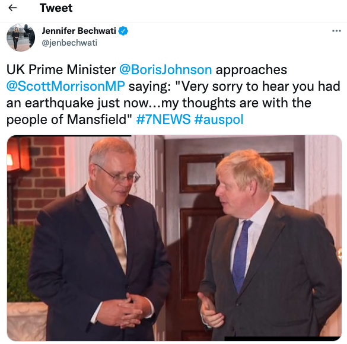
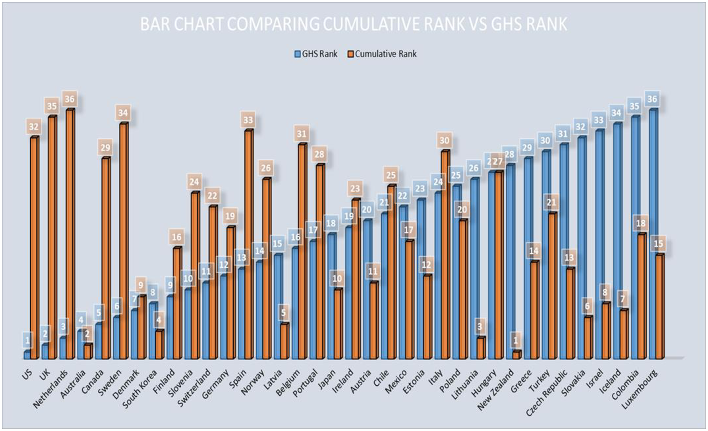

I. Introduction
Some prefer iPhones. Others prefer Android. These are the two standards left standing for what only old guys call smartphones. 'Standards wars' like this have arisen throughout history. No doubt readers can provide examples back to the ancient world, but the switch to double entry bookkeeping from 1299 on and from the Julian to the Gregorian calendar from 1582 to 1927 provide us with an early instances of standards warfare.
Since then the 19th-century gave us standards wars over railway gauges and between AC and DC current, not to mention the fairly rapid rise to sole dominance of simple standards as occurred with the QWERTY keyboard for instance. Things then really hotted up with the growing knowledge intensity of the 20th-century economy.
Still, even as the 20th-century saw hundreds of standards wars, they were hardly front of mind for most people. That’s particularly so for science and public policy thinkers. Standards played virtually no role in mainstream economics until the 1980s when all those pesky things that got in the way of the discipline’s great quest to understand an imaginary perfect economy were readmitted into polite conversation — things like scale economies, imperfect competition, asymmetric information, cognitive biases and path dependency.
But I think standards are a much bigger deal than this mild revisionism would have us believe. They provide a way into thinking about the world as if most of our understanding occurs outside our heads. If that strikes you as outrageous, here’s Nathaniel T. Wilcox, a fine behavioural economist and econometrician on the point:
I suggest that the main genius of the human species lies with its ability to distribute cognition across individuals, and to incrementally accumulate physical and social cognitive artifacts that largely obviate the innate biological limitations of individuals. If this is largely why our economies grow, then we should be much more interested in distributed cognition in human groups, and correspondingly less interested in individual cognition. We should also be much more interested in the cultural accumulation of cognitive artefacts: computational devices and media, social structures and economic institutions.
Standards are a window — though only that — on that parallel universe in which our minds are ‘distributed’.
II. Standards create worlds
In the language of modern economics, standards are public goods. And, as we’ll see, they’re increasingly important. But they’re rarely used as textbook examples of public goods because they fit uneasily into economists’ intuition. Within the metaphysic of economics as a science of scarcity, the paradigm of a public good is some discrete physical thing or service that is costly to produce but which isn’t effectively produced by markets. Thus roads, streetlights, police and defence forces turn up in economics textbooks as examples of public goods. However, standards often consume few, if any, resources and often arise from the epiphenomena of life. The rule determining which side of the road we drive or the gauge of a railway are good examples. The standards associated with the internet cost thousands of person-hours but that’s trivial compared to what they’ve made possible — even more so the standards that are the World Wide Web. And once brought into existence they exist forever without cost until they are superseded. Yet they create whole worlds.In fact, standards created worlds long before this if you think of the communities of practice that grew up around the trades and professions through the last millennium. These are ‘the ways we do things’ that built the modern knowledge economy from law and accounting to engineering and quantity surveying through all the scientific disciplines. Today they run like arteries through the modern knowledge economy, each one a public good, and each one maintained stigmergically (sorry about the ugly neologism, but there you go — its does rather hit the nail on the head), and at minimal cost. You may or may not want to call these things ‘standards’, but the explicit and practical knowledge by which our society operates resides only fragmentarily within any particular head but in its totality in the network of particular communities of practice. As Jonathan Rauch puts it in his excellent recent book The Constitution of Knonwledge:
Objectivity, factuality, rationality: they live not just within individuals’ minds and practices but on the network …. “Objectivity,” wrote the philosopher Helen E. Longino in her influential 1990 book, Science as Social Knowledge, “is a characteristic of a community’s practice of science rather than of an individual’s.”
Or, as Steven Sloman and Philip Fernbach write in their 2017 book, The Knowledge Illusion: Why We Never Think Alone,
People are like bees and society a beehive: our intelligence resides not in individual brains but in the collective mind. To function, individuals rely not only on knowledge stored within our skulls but also on knowledge stored elsewhere: in our bodies, in the environment, and especially in other people. When you put it all together, human thought is incredibly impressive. But it is a product of a community, not of any individual alone.
And this goes way back into human history. One of the reasons Western explorers like Burke and Wills perished when left to their own devices in areas where the indigenes were doing just fine was that Indigenous knowledge was vast, unable to be learned at all quickly, and resided on the network — within Indigenous culture — rather than in any one mind. Here’s a marvellous article by human developmentalists Boyd, Richerson, and Henrich. It describes the deaths of the state of the art Franklin Expedition in the mid-19th-century. The ships were kitted out with two years’ supplies, so when they got stuck on King William Island they had over a year to learn how to survive. (The Inuit name for King William Island translates “lots of fat”.) That they didn’t manage to acquire much of that fat isn’t very surprising when you learn how the Inuit did it.
Plants are easy to gather, but for most of the year, this is not an option in the Arctic. During the winter, the Central Inuit hunted seals, mainly by ambushing them at their breathing holes. When the sea ice begins to freeze, seals claw a number of breathing holes in the ice within their home ranges. As the ice thickens, they maintain these openings, which form conical chambers under the ice. The Inuit camped in snowy spots near the seals’ breathing holes. The ice must be covered with snow to prevent the seals from hearing the hunters’ footsteps and evading them. Inuit hunted in teams, monitoring as many holes as possible. The primary tool was a harpoon approximately 1.5 m long. Both the main shaft and foreshaft were carved from antler. On the tip was a detachable toggle harpoon head connected to a heavy braided sinew line. The other end of the harpoon was made from polar bear bone honed to a sharp point. At each hole, the hunter opened the hard icy covering using the end of the harpoon, smelled the interior to make sure it was still in use, and then used a long, thin, curved piece of caribou antler with a rounded nob on one end to investigate the chamber's shape and plan his thrust. The hunter carefully covered most of the hole with snow and tethered a bit of down over the remaining opening. Then, the hunter waited motionless in the frigid darkness, sometimes for hours. When the seal's arrival disturbed the down, the hunter struck downward with all his weight. If he speared the seal, he held fast to the line connected to his harpoon's point; the seal soon tired and could be hauled onto the ice.
At least arguably, Burke and Wills perished for the same reason — they didn’t understand how to prepare the nardoo on which they fed, and it required proper preparation to yield up its nutrition. However standards matter even more than all this. Economics clings tightly to homo economicus which begins with Adam Smith’s idea of human beings being driven by innate tendencies to ‘truck, barter and exchange’. But Adam Smith’s foundational treatise on human nature — The Theory of Moral Sentiments — placed homo networkus at the centre. We are creatures of networks radiating out from the bond between mother and infant to our families and communities to wider associations, including our country and even humanity itself. And language and culture are standards-based networks. (Smith also wrote an essay on the evolution of language as another example of order without design — along with culture (The Theory of Moral Sentiments) and markets (The Wealth of Nations). But so far we’ve discussed only what I’ll call technical standards, which is to say standards that underpin coordination between parts of a system and are integral to it doing its work. In part two, I'll discuss a different kind of standard that has received far less attention — at least considered as a standard: Comparative standards. To be continued …
Standards Part Two: continued from Part One.
Why is this man smiling?
III. Introduction
Why is this man smiling? He's smiling because he is Charles Francis Richter and he came up with the Richter scale. And if you have come up with the Richter scale, every time there’s an earthquake, people who want to sound informed mention your name. And scientific tests prove that everyone — even small insects — like having their name mentioned.But Charles has left the world with two problems. First, as Wikipedia reports:
Because of various shortcomings of [Richter's] scale, most seismological authorities now use other scales, such as the moment magnitude scale (Mw ), to report earthquake magnitudes, but much of the news media still refers to these as "Richter" magnitudes.
Still, to retain their comparability to the familiar scale the scales developed in the Richter Scale’s stead “retain the logarithmic character of the original and are scaled to have roughly comparable numeric values (typically in the middle of the scale)”. It gets worse. In fact, we’re mostly uninterested in all these scales' measurements because we’re usually interested in the felt intensity of earthquakes in highly populated places. Thus, for instance, one of Troppo’s apex nodes — Melbourne — recently experienced an earthquake, which we were assured was 5.9 on the Richter Scale by people who are paid good money to look serious. By contrast, Christchurch’s 2011 earthquake was only 6.3 on the Richter scale and caused vastly more damage. As analysis from Troppo’s Epicentre Analysis Division (EAD) reveals, the main reason for the disparity is that the epicentre of the Christchurch earthquake was in a suburb of Christchurch whereas the epicentre of the Melbourne earthquake was in Mansfield.

(Even here, it wasn’t long before the Victorian earthquake produced shocks that were felt around the world, for instance, in comments from Britain’s famously empathetic Prime Minister, but I digress). In fact, if you want to know the intensity of the earthquake in Melbourne, you should be using a quite different comparative standard — a Seismic Intensity Scale. But who’s heard of that? And if you’re paid to look serious, that's serious enough! You're not paid to sound serious. Now maybe if Charles Francis Richter had been born to Mr and Mrs Seismic Intensity, we wouldn’t be in this situation. But they weren’t. So we are!IV. Designing comparative standards that are fit for purpose
Welcome to the dilemmas of comparative standards. They are brought into existence for any number of purposes, but once they are, usage and familiarity sees them solidifying in use. Some comparative standards make good sense in their initial use. But then, they become so well known that they’re used to compare things they were never built to compare — or not in the way they come to be compared. Thus GDP was exceptionally well crafted to measure economic activity for the purposes of macroeconomic management.Then it became a point of comparison between countries. Again, because of its rigour, it was useful for this in some respects. But its familiarity meant that it became more or less ubiquitous as a general measure of a country’s economic performance. It’s pretty good as an aggregate measure, but it’s substantially worse as a summary measure of economic welfare or wellbeing. It can be converted to a per capita measure easily enough but that leaves out the distribution of income (I think we should care more about median income per capita than average income or GDP per capita.). And then there are all the old chestnuts summarised by Bobby Kennedy that just because you spend money on things, they might not improve your wellbeing — things like guns, security equipment, military spending, prisons and so on. Wherever they’re intended to generate information on merit, metrics of all kinds are competitive standards. And it‘s often surprising how little discussion they attract. KPIs within organisations are notorious for being taken too much at face value — setting off all kinds of misalignments between what the organisations and/or those within them are supposed to be about and what they’re actually doing. This then sets off invidious incentives where the metric is managed rather than the outcome that the metric is supposed to be capturing. There’s always some discussion about the marking regimes of schools, but it’s often limited to global debates that such metrics will encourage ‘teaching to the test’. Something I’d like to see more attention to is whether we want such systems to identify those with the best conceptual grasp of their subject as the best or those who manage to train themselves to make the least mistakes. And then there are comparative standards that arrive from outside the systems they operate as standards for …
Standards: Part Three
Continued from Part Two.
 If we had an epidemic preparedness index, we could have a league ladder of epidemic preparedness. Then all we'd have to do is get to the top of the ladder and we'd be THE MOST PREPARED IN THE WORLD. #WTNTL?
If we had an epidemic preparedness index, we could have a league ladder of epidemic preparedness. Then all we'd have to do is get to the top of the ladder and we'd be THE MOST PREPARED IN THE WORLD. #WTNTL?
Introduction
Within the fabric of our knowledge, some ideas serve more local needs — identifying a particular item — while others acquire a structural role. Thus, if you’re a physicist, ideas like ‘mass’, ‘velocity’, ‘momentum’ and so on structure thinking in the field. If you want to do physics you get with the program and learn to think about the world through those concepts. These ideas can be critiqued and changed. But for as long as they’re current, they operate like standards. They supply some of the ‘rules of the game’ of the discipline.[1] And as I’ve argued previously, whether or not J.K. Galbraith was correct that post-war American capitalism combined private affluence with public squalor, something similar has happened to the fabric of ideas in our knowledge economy — that is, those ideas that structure our thinking receive inadequate attention. And, as I’ll argue below, this is a particular problem with standards.
Legibility versus fidelity
All measurement seeks to render a particular thing legible. That a particular student gets a mark or an ATAR of 87 makes it legible to others how good they were at a particular thing. But there’s always and inevitably a tradeoff between legibility and fidelity to reality. If she had a migraine that day, or there was a badly worded question, or the testing measured one kind of intelligence and not another, then that’s not ideal, as we say. Now, let’s say you want to pick the most prospective students to secure the limited number of university places to become a doctor. To do so, you need legibility. And the simplest kind of legibility is all applicants’ marks. One can complicate the process — with special consideration, affirmative action, personality tests, interviews and so on. Each of these methods may improve things, or not. And each will introduce their own tensions between legibility and fidelity to the underlying reality. And, as we discussed in the previous part of this essay, whatever their inadequacies, comparative standards like school marks were purpose-built by the institutions that then used them. But, like a pathogen escaping its petrie dish and then jumping the species barrier, once established, comparative standards can slip their moorings and turn up in unexpected places.[2] I’ve previously given the example of GDP being developed to understand macroeconomic dynamics and assist in macroeconomic management. Yet they became the default benchmark of economic wellbeing.
Legibility über alles
However, we’re in a strange kind of society in which being entertaining has become an apex cultural value. And rankings make great clickbait. You know the kind of thing — which of the Queen’s grandchildren has the biggest stamp collection, loudest voice, smallest rodent for a pet, the stupidest hat, the biggest impact on quantum computing and so on. Given how ‘infectious’ they are, it’s no surprise that comparative standards can also come into existence from outside the systems they infect. And there, like gut flora, they can do good or harm. So we’ve got league ladders popping up all over the place. The best countries for this or that, the most innovative companies, the 50 most influential thinkers, composers, poets, arch criminals and whatever. The Nobel Prize winners who were best at whistling. The World Economic Forum creates and/or makes use of so many indexes of country rankings that it has to lease an additional 100 private jets over and above all the CEO’s private jets (and the environmental activists’ hemp woven bicycles) just to fly them in. Some indexes probably do some good — as I guess things like league ladders of political freedom and transparency do. However, usually, that line about laws being like sausages applies: it’s best not to look too closely at how they’re made. In particular, composite indexes have all kinds of conceptual problems. In the area of wellbeing, they add values that are incommensurate and, more often than not, mention the problem briefly before — via a quick piece of misdirection — they make the decision by default rather than design.[3] As for instance in this deliciously silly paragraph from the Canadian Index of Wellbeing (I have to admit to getting a secret thrill every time I read the last three words. "at this time". It's improvised bullshit all the way down.):
There are many reasons for regarding one or another indicator as more important in some way or other, but what is missing is a good reason for assigning any particular indicator a weighting greater or less than that of some or all other indicators. The absence of such a reason justifies the equal treatment of all indicators at this time.
Oh what a tangled web
In any event, most of the time the legibility/fidelity tradeoff is given short shrift. Life’s too short, and there’s bait to click and eyeballs to attract. This is often relatively harmless and the media gets its little sugar hits, people chat away about these rankings or that. And for those things that aren’t suited to the index treatment? Well nature abhors a vacuum. Here the demand is for the complex things in life to be rendered easily legible. It’s remarkable how often media or PR organisations figure in the development of these indexes — as they did for instance with Lateral Economics’ own one which was commissioned by Fairfax. One of the most spectacular disasters is the Global Health Security Index — a collaboration between the Economist Intelligence Unit, NTI,[4] and Johns Hopkins Center for Health Security. The first iteration of the index published just before the arrival of the plague put the US and the UK at the top of their preparedness index. Here’s a quick graphic comparing early health costs of the pandemic with the ranking on the index.

Oops! After explaining the non-correlation, Manjari Mahajan makes a more profound point, that the index sits atop a whole socio-technical system which presumes that the world will render itself legible to its technical methods.[5]{B}etter indicators and more data would not have fixed the problem. Rather, the prevailing paradigm … narrowly conceptualises global health security in terms of the availability of a technical infrastructure to detect emerging infectious diseases and prevent their contagion, but profoundly undertheorises the broader social and political determinants of public health. The neglect of social and political features is amplified in instruments such as the GHS Index that privilege universalised templates presumed to apply across countries but that prove to be inadequate in assessing how individual societies draw on their unique histories to craft public health responses.
Amen to that, though Mahajan neglects the intellectual cost of such an approach. In a novel situation with profound implications for most of our social and economic systems, it’s critical for decisions to be made on the merits rather than because they’ve acquired the force of habit or because the people in the relevant positions say so, or were trained to say so. In the upshot, we had medical advisors playing the role of scientist for the camera while nevertheless harbouring the thinking and career aspirations of bureaucrats. Incredibly, New Zealand seems to have been unique in having official advisors who, within a few months, suggested rethinking their whole plan because existing plans were based on influenzas being the problem and, remarkably enough, coronaviruses have different characteristics requiring different management. Certainly, our medical geniuses weren’t up to it and spent their time reassuring us that wearing masks was silly. Thanks Brendan. Thanks Paul. And we got a special effort from Nick who appears to have supported lockdowns but not to eradicate the virus and who informed us with great confidence — I think as late as May 2020 — that the virus wasn’t airborne. At least he looked serious. Any functioning set of institutions would have shunted him off-stage. But, being disastrously wrong has done nothing to harm his career as a go-to guy for comment on public health. But I digress.
Metastasising metricated mediocrity
Peter Bernstein: We were looking to reinvent the magazine, and the college rankings became part of that … An algorithm to capture the elusive quality of academic excellence finding those points of data and putting them into a ranking as you can appreciate is a complicated task yes full of value judgments, full of problems challenges dangers but we were undaunted and and proceeded. Malcolm Gladwell: I love that you're laughing about this. (“Lord of the Rankings”, Revisionist History.)
As big a disaster as it was for predicting pandemic readiness, the Global Health Security Index probably didn’t do much harm.[6] In truth, many of these indexes are harmless fun. But they’ve been devastating in one area: Higher education. I won’t quote chapter and verse here, but rather refer you to Malcolm Gladwell’s recent crusading on the matter. As he reported on his podcast, it all started with the US News & World Report trying a new marketing pitch and, like the master’s apprentice, once the process had started, it couldn’t be stopped. The escalating managerialism of universities was no-doubt predestined to some extent by the increasing (neoliberal) managerialism of the zeitgeist and its propagation by government bureaucracies. But the indexes exerted a particular force via the extent to which they influenced student choice and university bureaucrats via the reputation of their university. Gladwell’s point is not just how bad the rankings are — that is how crude their proxies are for measuring quality. Nor is it just how they actively discriminate against colleges that won’t play their game and send their data in. His real gripe is the invidious impact of the rankings in various ways — for instance in penalising colleges for taking on more disadvantaged students (who will have lower expected graduation than high SES students), and how the methods of the most successful colleges in dealing with disadvantaged students are completely invisible to the index, which uses proxies for good teaching that favour of colleges with famous alumni, large endowments and existing name recognition. The first half of this interview deals with the points more expeditiously than the podcast. Since the US News & World Report promotional gimmick, university rankings have gone global. They’re slipshod in similar ways, though probably not quite so slipshod, but they’re of immense importance not just to students' choice of university and thus to ossifying existing status rankings of universities but also, even more disastrously, to the way academics are chosen and promoted. And yet we could do so much better. I’ve written previously about how, in its haste to intensify competition, neoliberal university reform neglected the public goods of academia — peer review, replication and cooperative publishing. But here we have another public good — the comparative standard, the values embedded within it and propagated by it, and the quality of its execution. And when it comes to reformers considering what might be done to minimise the damage and maximise any good they might do? Well the silence has been thundering.
Footnotes
[1] I add by way of aside that this is a quite general observation about thought and the same can be said of ‘folk’ systems of practical knowledge about the world. [2] In a sense the use of school marks as criteria for post-school admissions gives us a case in point — they’re being used by another institution for its own purposes (though this use was an important consideration in the development of the standard.) [3] One I’ve documented at length is wellbeing indexes. They claim to go beyond the inadequacies of GDP or GDP per capita which is a worthwhile aim. But the vast majority of them — including ones built with great seriousness and professional input — are conceptually incoherent, not just in some details but at their very heart. As I’ve shown, this is obviously true of the worst of them like the Canadian Index of Wellbeing and Australia’s own Australian National Development Index. It’s slightly less obvious in the case of the OECD’s Better Life Index, but not much. At least with the Herald/Age Lateral Economics (HALE) Index of wellbeing, I’ve argued the heroic assumptions we make can be a feature not a bug in the sense that they’re made very transparently, and so can be critiqued and changed. Sadly this approach is very much in the minority. Another problem, and one that drives me crazy (and incidentally not one we’ve solved in our own index) is this. I’ve never liked the idea of the weight being given to each dimension of an index being predetermined. That’s because the relationship of different parts of our makeup is organic, not tamely linear. The way I try to make that vivid to people is to ask them to rank their favourite organs. Whatever one you name, there are an awful lot left that you’ll still need. To have half-way decent lives we need an awful lot of things to be working and working in harmony with each other. [4] On a quick squiz, NTI seems to be a philanthropically funded organisation that’s “transforming global security by driving systemic solutions to nuclear and biological threats imperiling humanity”. [5] I’ve made a similar point in a different context here. [6] It could have produced some complacency but everyone was conditioned to complacency by their sense of normality for way too long. And it could have spurred lower scoring countries to a bit more (useless?) action.
Well done Nick. A very interesting article. By the way there some dinosaurs out here who have NEVER had a smart phone and never will. Could be correlated with people who do not have a facebook account.
A nice illustration of the way in which comparison for ranking can empty out content
https://twitter.com/NGruen1/status/1640313774149373953
The power of standards to influence means there's sometimes a rush to define one by various folks trying to influence outcomes. Quinn Slobodian has a powerful discussion of the creation of the Index of Economic Freedom in Crack-up Capitalism. And here's the Wikipedia article on the three indexes of economic freedom.
Note to file
Note to file
Geoff Mulgan
Note to file: a new book of some relevance:
Note to self: Algorithms as normative standards. https://substack.com/inbox/post/175174556